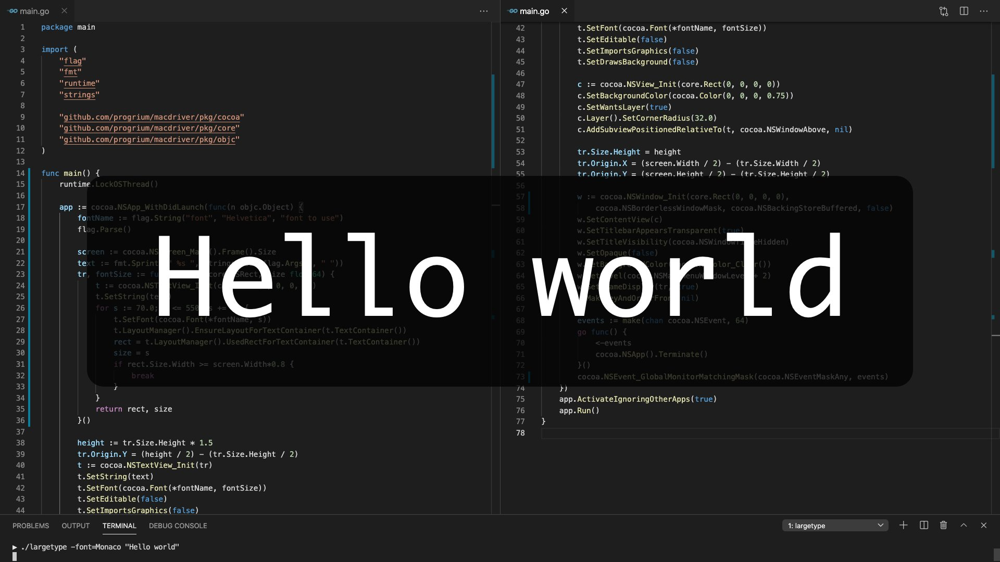
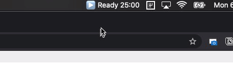

Go 终于可以开发原生 Mac APP 了
本文是 macdriver 作者写的，这是一个 Go 语言的 Objective-C 桥接器，使得 Go 可以使用 Mac API。如果做过 Apple 相关应用开发，可以试试这个。
如果你使用 Apple 设备并且是 Go 程 序员，或者正在考虑学习 Go，那么我们会获得一些非常酷的新功能。今天，我发布了 macdriver 的 Alpha 版，这是一个 Go 语言的 Objective-C 桥，具有与常见 Mac API 的绑定。
那些关注我的上一篇有关 Large Type in 80 lines of Go 的文章的人可能已经找到了 macdriver。 largetype 程序是 macdriver 的示例项目之一。

macdriver repo 中的另一个示例是这个额外的小菜单栏（又名 systray 或状态图标），它为您提供了 Pomodoro 计时器。这个小程序也使用 macdriver 的不到 80 行代码 。

最后，如果您正在使用 Go 1.16 beta，或者可以等待它的正式发布，也有一个示例可以为您提供具有透明背景的全屏 Web 视图，让您可以使用 Web 技术在屏幕上绘制 overlays 之类的东西。Twitch streamers 可能也加入其中，是不是很棒！
多年的打磨
MacDriver 的动机是方便通过 Go 来使用 Mac 系统 API（例如 Cocoa）制作 GUI 应用程序，就是说，我的大部分工作现在都将网络技术用于用户界面，即 la Electron。
去年，我使用 webview 项目在 Go 中启动了一个替代的 Electron 堆栈，该项目使用您平台的本机浏览器引擎并创建一个带有 webview 的窗口。尽管绝对简单且跨平台，但该项目并未优先考虑任何平台特定的功能。
最重要的是，如果您还想在同一程序中制作一个类似于 Pomodoro 计时器的小菜单小程序（并非罕见），您可以找到另一个独立的跨平台 Go 库来存放系统托盘内容，但是这些一次性库通常会有 API 不完整的困扰。更重要的是，它们是不可组合的！您不能将 systray 库与 webview 库一起使用，因为它们都假定拥有主 Cocoa 线程。
因此，像往常一样，我感到沮丧的是，没有一个更广泛思考，更通用的解决方案。如果我想使用其他 Mac API，该怎么办？等待另一个不完整，不可组合的项目？不，我们在这里建立自己的未来。
早在 2013 年，我就发现了一个丹麦人 Mikkel 创建的项目：Objective-C bridge for Go ，虽然它不能正常工作。
这整个过程应该很简单。 Objective-C 运行时 实际上是一个名为 libobjc 的 C 库。因此，从理论上讲，您应该能够像其他 C 库一样使用 cgo 调用 libobjc 并在 Go 中使用 Objective-C 对象。
不幸的是，libobjc 中调用函数（对于任何方法/函数调用都是通用的）的参数是可变的（接受任意数量的参数）。 Cgo 不支持可变参数函数调用！因此，Mikkel 使用了汇编操作 ，以使几乎任何可变的 C 函数都可调用。惊人！但是自 2013 年以来，对 Go 运行时的更改打破了这一点，他很早就转向其他项目。
有了一定的决心，我又进行了黑客般的工作。我甚至忘了我在 2018 年在 dev.to 上发布了有关此问题的信息。还有更多的事情需要解决，但是直到去年初我需要解决此 Webview 和系统托盘可组合性问题时，我都是将其搁置的。我引入了废弃的 objc bridge 程序包（我已修复的可变参数程序包），并开始为某些更常见的 Mac API 制作本机 Go 包装器。结果是 macdriver！
好处
现在，您可以在 Go 中制作可以处理 Mac 的快速，本机二进制文件。不仅仅意味着制作 MacOS 应用程序。有许多 API 只是开辟了新的可能性。例如，我很兴奋能使用 Core ML API 在新的 M1 设备上使用神经引擎。
另一个好处是能够使用 Go 构建工具链快速制作 Mac 应用。没有 Xcode！只需要 go build。
后续计划
我很高兴看到人们使用 macdriver。在 README 中有很多有关使用它的信息，但我仍在研究文档。在这一点上，它应该主要是自我解释，但随时可以在论坛 中提问。
如果您有兴趣与我一起探索新的可能性，我一直想尝试将 macdriver 用于 Apple Watch 应用程序。 Mikkel 的原始桥包中有一个 iOS 概念验证，但我还没有尝试过。假设它可以工作（可能涉及 Xcode 或其他开发人员工具），似乎也可以用于 Apple Watch 甚至 Apple TV。
原文链接：https://dev.to/progrium/use-mac-apis-and-build-mac-apps-with-go-ap6
本文作者：Jeff Lindsay
编译：polarisxu